#importing library
library(ggplot2)
library(tibble)Task 1
Getting Started
#viewing data frame
mpg# A tibble: 234 × 11
manufacturer model displ year cyl trans drv cty hwy fl class
<chr> <chr> <dbl> <int> <int> <chr> <chr> <int> <int> <chr> <chr>
1 audi a4 1.8 1999 4 auto… f 18 29 p comp…
2 audi a4 1.8 1999 4 manu… f 21 29 p comp…
3 audi a4 2 2008 4 manu… f 20 31 p comp…
4 audi a4 2 2008 4 auto… f 21 30 p comp…
5 audi a4 2.8 1999 6 auto… f 16 26 p comp…
6 audi a4 2.8 1999 6 manu… f 18 26 p comp…
7 audi a4 3.1 2008 6 auto… f 18 27 p comp…
8 audi a4 quattro 1.8 1999 4 manu… 4 18 26 p comp…
9 audi a4 quattro 1.8 1999 4 auto… 4 16 25 p comp…
10 audi a4 quattro 2 2008 4 manu… 4 20 28 p comp…
# ℹ 224 more rows# displaying data frame through a plot
mpg %>%
ggplot(aes(displ, hwy, colour = drv)) +
geom_point()
#displaying the data through the vary size of dots
mpg %>%
ggplot(aes(displ, hwy, colour = drv, size = cyl)) +
geom_point(show.legend = FALSE) +
theme_void() +
scale_color_brewer()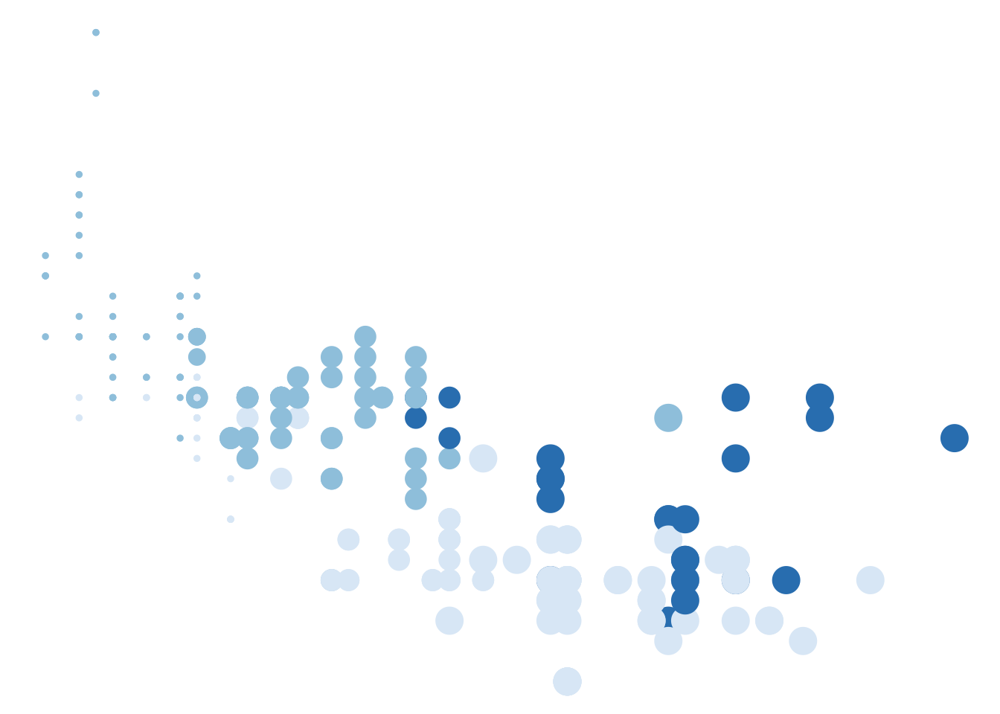
# introduce the function "scale_color_brewer"
mpg %>%
ggplot(aes(displ, hwy, colour = drv)) +
geom_point(show.legend = FALSE, size = 4) +
geom_point(show.legend = FALSE, size = 1, colour = "#222222") +
coord_polar() +
theme_void() +
scale_color_brewer()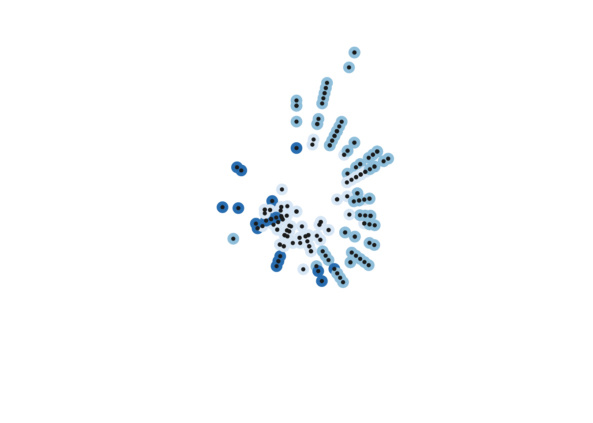
#instead of using mpg, data frame, we can create our own
# the command set.seed(), ensures that the pseudorandom number will always generate the same
set.seed(1)
n <- 50
dat <- tibble(
x0 = runif(n),
y0 = runif(n),
x1 = x0 + runif(n, min = -.2, max = .2),
y1 = y0 + runif(n, min = -.2, max = .2),
shade = runif(n),
size = runif(n)
)
dat # generated data frame is called dat # A tibble: 50 × 6
x0 y0 x1 y1 shade size
<dbl> <dbl> <dbl> <dbl> <dbl> <dbl>
1 0.266 0.478 0.327 0.523 0.268 0.762
2 0.372 0.861 0.313 0.884 0.219 0.933
3 0.573 0.438 0.481 0.370 0.517 0.471
4 0.908 0.245 1.11 0.226 0.269 0.604
5 0.202 0.0707 0.255 0.0709 0.181 0.485
6 0.898 0.0995 0.784 -0.0282 0.519 0.109
7 0.945 0.316 0.796 0.328 0.563 0.248
8 0.661 0.519 0.652 0.349 0.129 0.499
9 0.629 0.662 0.799 0.573 0.256 0.373
10 0.0618 0.407 0.101 0.292 0.718 0.935
# ℹ 40 more rows# same setup as mpg dataframe but this is with the randomly generated data
dat %>%
ggplot(aes(
x = x0,
y = y0,
xend = x1,
yend = y1,
colour = shade,
size = size
)) +
geom_segment(show.legend = FALSE) +
coord_polar() +
scale_y_continuous(expand = c(0, 0)) +
scale_x_continuous(expand = c(0, 0)) +
scale_color_viridis_c() +
scale_size(range = c(0, 10)) +
theme_void()Warning: Using `size` aesthetic for lines was deprecated in ggplot2 3.4.0.
ℹ Please use `linewidth` instead.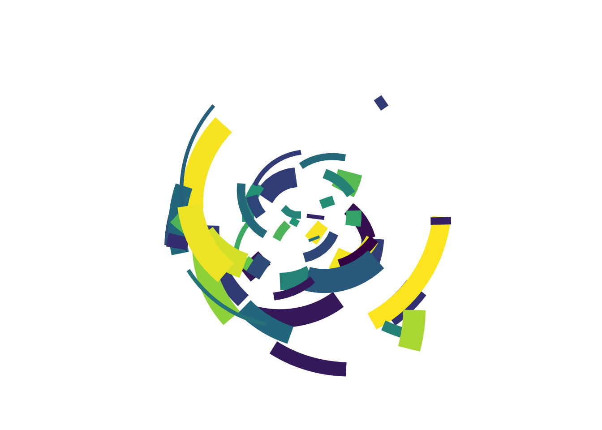
Technique
# polar_art is a command used to create many art pieces that are in the same style
polar_art <- function(seed, n, palette) {
# set the state of the random number generator
set.seed(seed)
# data frame containing random values for
# aesthetics we might want to use in the art
dat <- tibble(
x0 = runif(n),
y0 = runif(n),
x1 = x0 + runif(n, min = -.2, max = .2),
y1 = y0 + runif(n, min = -.2, max = .2),
shade = runif(n),
size = runif(n)
)
# plot segments in various colours, using
# polar coordinates and a gradient palette
dat |>
ggplot(aes(
x = x0,
y = y0,
xend = x1,
yend = y1,
colour = shade,
size = size
)) +
geom_segment(show.legend = FALSE) +
coord_polar() +
scale_y_continuous(expand = c(0, 0)) +
scale_x_continuous(expand = c(0, 0)) +
scale_colour_gradientn(colours = palette) +
scale_size(range = c(0, 10)) +
theme_void()
}# with the polar_art function, by changing the settings inside, you can generate any plot style
polar_art(seed = 1, n = 500, palette = c("antiquewhite", "orange", "bisque"))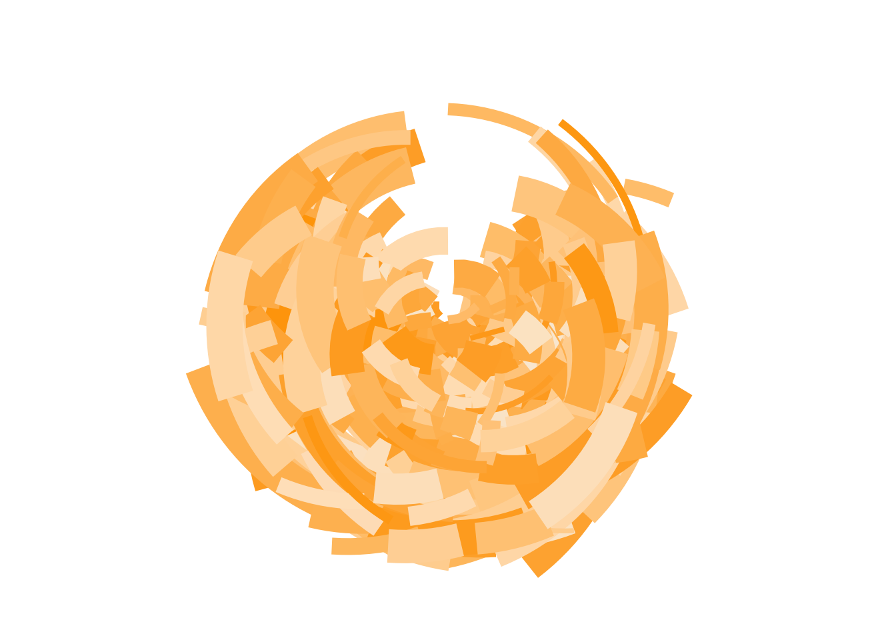
polar_art(seed = 1, n = 500, palette = c("red", "black", "white"))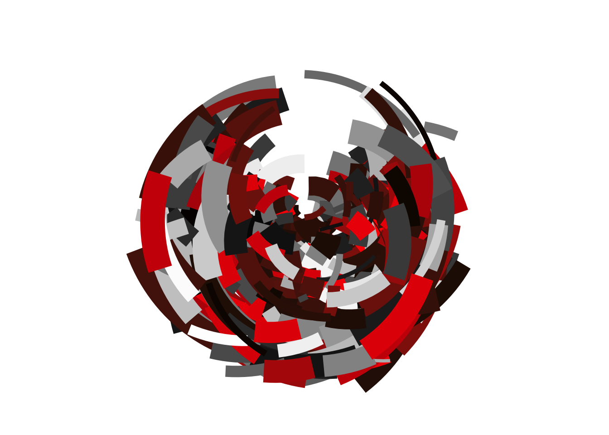
polar_art(seed = 2, n = 50, palette = c("red", "black", "white"))
Colour
library(scales)
library(ggthemes)# incorperating new colors
pal <- c("#cdb4db", "#ffc8dd", "#ffafcc", "#bde0fe", "#a2d2ff")
show_col(pal)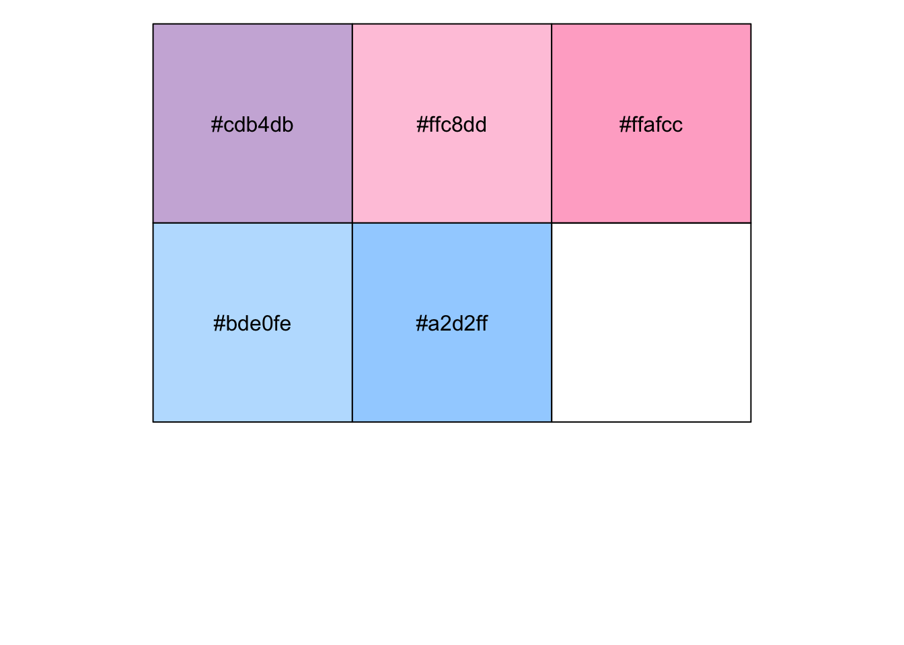
# this displays the color's label
palette_fn <- colorRampPalette(pal)palette_fn(100) [1] "#CDB4DB" "#CFB4DB" "#D1B5DB" "#D3B6DB" "#D5B7DB" "#D7B8DB" "#D9B8DB"
[8] "#DBB9DB" "#DDBADB" "#DFBBDB" "#E1BCDB" "#E3BCDB" "#E5BDDB" "#E7BEDC"
[15] "#E9BFDC" "#EBC0DC" "#EDC0DC" "#EFC1DC" "#F1C2DC" "#F3C3DC" "#F5C4DC"
[22] "#F7C4DC" "#F9C5DC" "#FBC6DC" "#FDC7DC" "#FFC7DC" "#FFC6DC" "#FFC5DB"
[29] "#FFC4DA" "#FFC3DA" "#FFC2D9" "#FFC1D8" "#FFC0D8" "#FFBFD7" "#FFBED6"
[36] "#FFBDD5" "#FFBCD5" "#FFBBD4" "#FFBAD3" "#FFB9D3" "#FFB8D2" "#FFB7D1"
[43] "#FFB6D1" "#FFB5D0" "#FFB4CF" "#FFB3CF" "#FFB2CE" "#FFB1CD" "#FFB0CD"
[50] "#FFAFCC" "#FDAFCD" "#FBB1CF" "#F8B3D1" "#F5B5D3" "#F3B7D5" "#F0B9D7"
[57] "#EDBBD9" "#EBBDDB" "#E8BFDD" "#E5C1DF" "#E3C3E1" "#E0C5E3" "#DDC7E5"
[64] "#DBC9E7" "#D8CBE9" "#D5CDEB" "#D3CFED" "#D0D1EF" "#CDD3F1" "#CBD5F3"
[71] "#C8D7F5" "#C5D9F7" "#C3DBF9" "#C0DDFB" "#BDDFFD" "#BCDFFE" "#BBDFFE"
[78] "#BADEFE" "#B8DDFE" "#B7DDFE" "#B6DCFE" "#B5DCFE" "#B4DBFE" "#B3DBFE"
[85] "#B2DAFE" "#B1D9FE" "#B0D9FE" "#AFD8FE" "#AED8FE" "#ACD7FE" "#ABD7FE"
[92] "#AAD6FE" "#A9D5FE" "#A8D5FE" "#A7D4FE" "#A6D4FE" "#A5D3FE" "#A4D3FE"
[99] "#A3D2FE" "#A2D2FF"image(
x = matrix(1:100, ncol = 1),
col = palette_fn(100),
useRaster = TRUE,
axes = FALSE
)canva_palettes[[101]][1] "#4abdac" "#fc4a1a" "#f7b733" "#dfdce3"show_col(canva_palettes[[101]])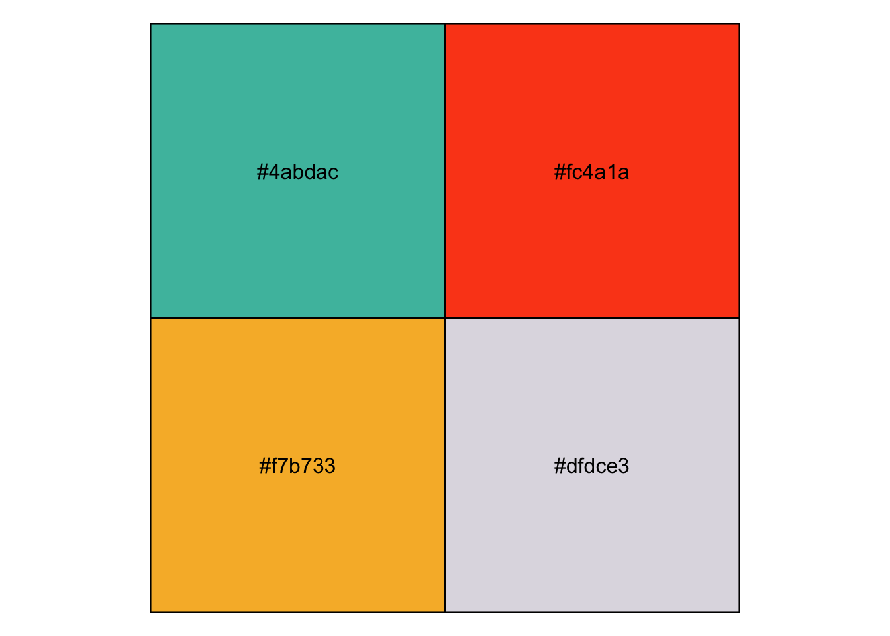
#sample_canva is a function that samples palettes at random
sample_canva <- function(seed = NULL) {
if(!is.null(seed)) set.seed(seed)
sample(ggthemes::canva_palettes, 1)[[1]]
}# example using the function polar_art and sample_canva
polar_art(seed = 2, n = 100, palette = sample_canva(seed = 2))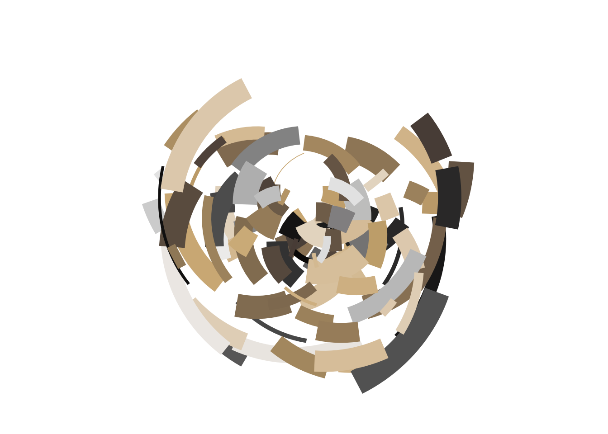
polar_art(seed = 2, n = 100, palette = sample_canva(seed = 3))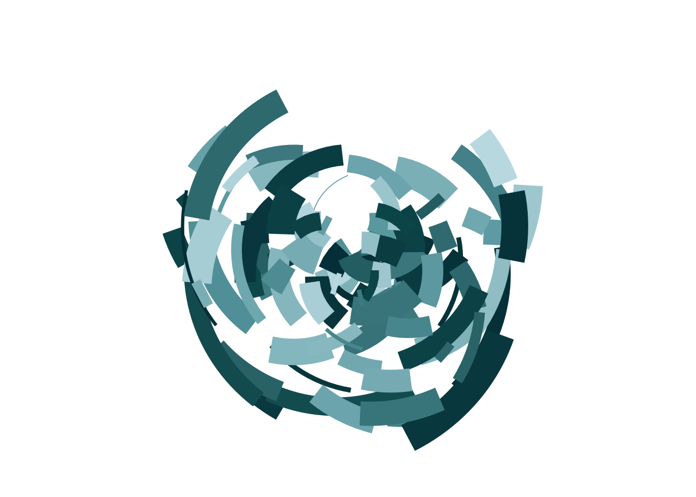
polar_art(seed = 2, n = 100, palette = sample_canva(seed = 4))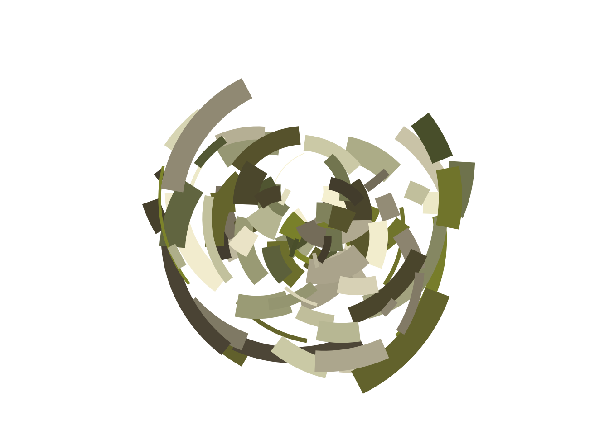
Composition
# the function polar_art is not the flexible, so we can use sample_data instead
sample_data <- function(seed = NULL, n = 100){
if(!is.null(seed)) set.seed(seed)
dat <- tibble(
x0 = runif(n),
y0 = runif(n),
x1 = x0 + runif(n, min = -.2, max = .2),
y1 = y0 + runif(n, min = -.2, max = .2),
shade = runif(n),
size = runif(n),
shape = factor(sample(0:22, size = n, replace = TRUE))
)
}#the function styled_plot() helps take a palette and data set as inputs and sets up the mapping and the stylistic aspects to the plot
polar_styled_plot <- function(data = NULL, palette) {
ggplot(
data = data,
mapping = aes(
x = x0,
y = y0,
xend = x1,
yend = y1,
colour = shade,
size = size
)) +
coord_polar(clip = "off") +
scale_y_continuous(
expand = c(0, 0),
limits = c(0, 1),
oob = scales::oob_keep
) +
scale_x_continuous(
expand = c(0, 0),
limits = c(0, 1),
oob = scales::oob_keep
) +
scale_colour_gradientn(colours = palette) +
scale_size(range = c(0, 10)) +
theme_void() +
guides(
colour = guide_none(),
size = guide_none(),
fill = guide_none(),
shape = guide_none()
)
}#compared to the code above, the code below is much cleaner
# the function sample_canva() does the work of generating random palettes
# the function sample_data() does the job of creating random data to drive the plot
# the funnction polar_styled_plot() takes care of all the gglot setup
dat <- sample_data(n = 100, seed = 1)
pal <- sample_canva(seed = 1)
polar_styled_plot(data = dat, palette = pal) + geom_segment()
polar_styled_plot(data = dat, palette = pal) + geom_path()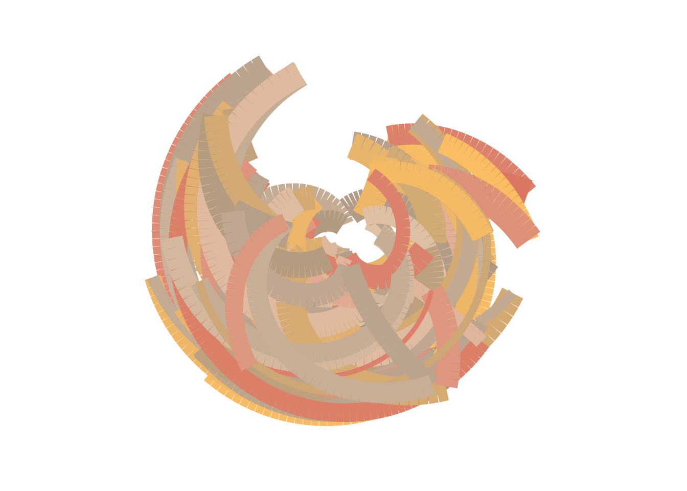
polar_styled_plot(data = dat, palette = pal) + geom_point()
# by incorporating the polar_styled_plot() we can now add more layers
library(dplyr)
Attaching package: 'dplyr'The following objects are masked from 'package:stats':
filter, lagThe following objects are masked from 'package:base':
intersect, setdiff, setequal, uniondat1 <- sample_data(n = 2000, seed = 123)
dat2 <- sample_data(n = 100, seed = 456) |>
mutate(y0 = .3 + y0 * .6, y1 = .3)
polar_styled_plot(palette = sample_canva(seed = 7)) +
geom_segment(
data = dat1 |> mutate(size = size * 3)
) +
geom_segment(
data = dat2 |> mutate(size = size / 5),
lineend = "round",
colour = "white"
) +
geom_segment(
data = dat2 |> mutate(size = size / 40),
lineend = "round",
colour = "#222222"
) +
geom_point(
data = dat2 |> mutate(size = size * 2),
colour = "#222222"
)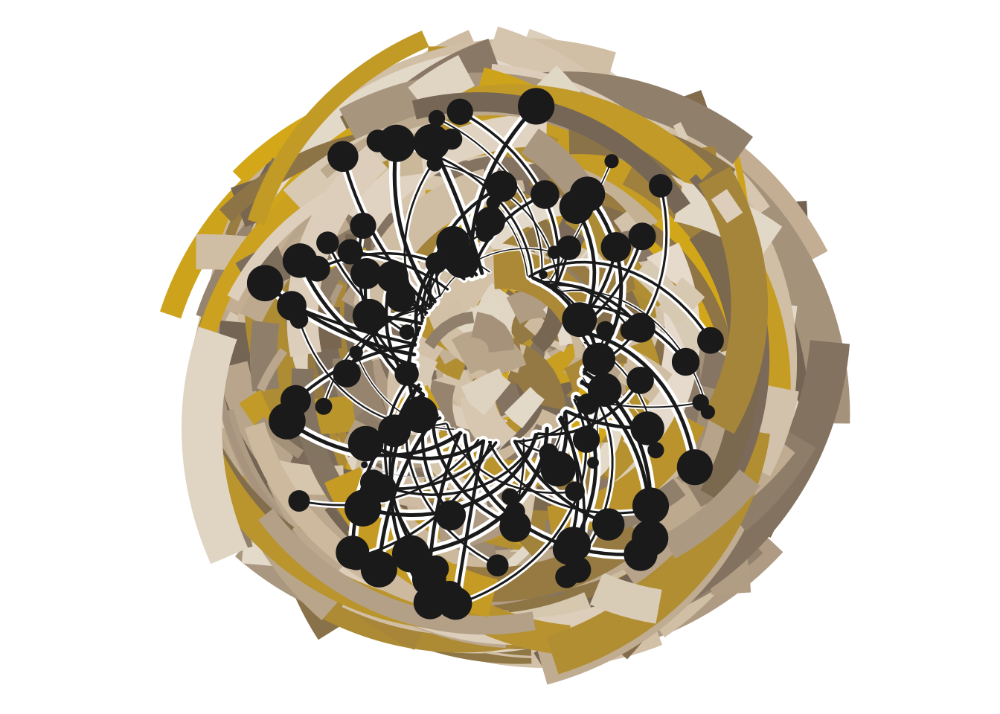
# this is the last line of code in.
# this displays the a clean code with using the function polar_styled_plot()
dat <- sample_data(n = 1000, seed = 1) |>
mutate(y1 = y0, size = size / 4)
polar_styled_plot(palette = sample_canva(seed = 2)) +
geom_segment(data = dat, linetype = "331311") 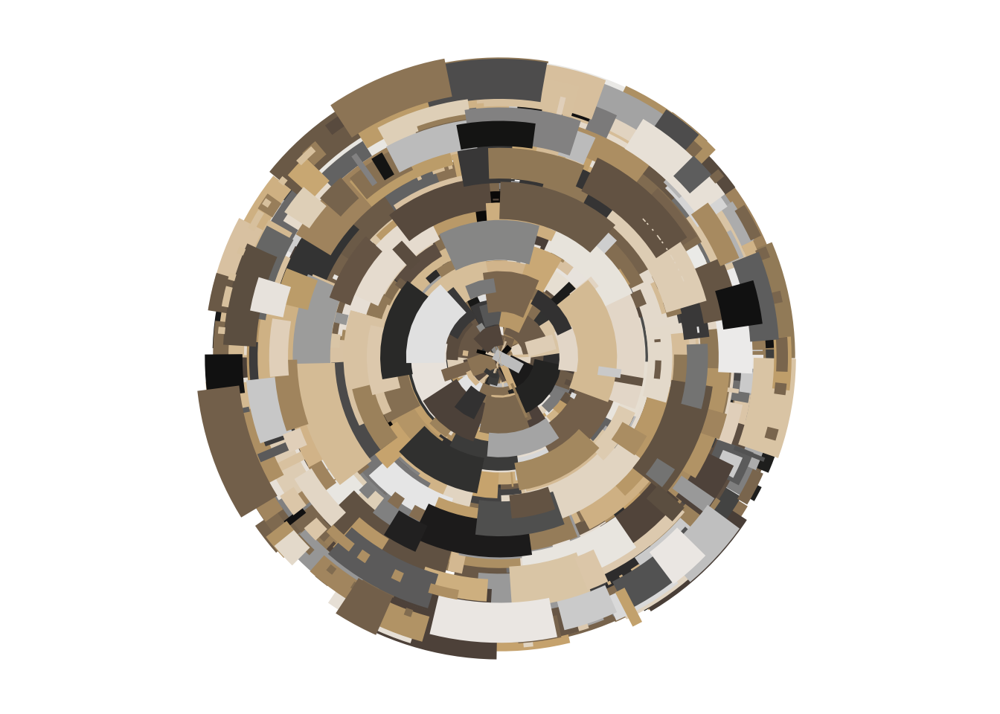